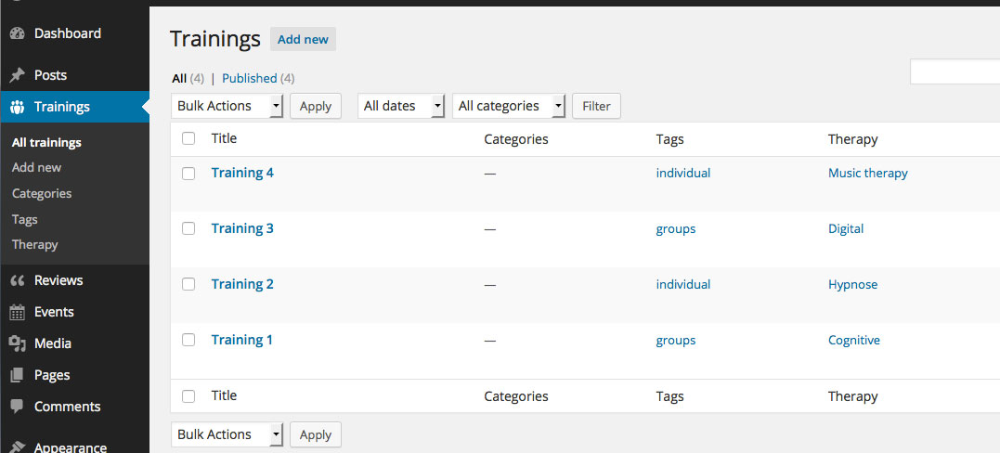

Mijn portfolio

Sass is mijn favoriete manier om CSS te schrijven voor een tijd nu. Recentelijk heb ik kennis gemaakt met Susy en kreeg meteen het gevoel dat dit is wat ik al jaren lang miste. Ik heb ontelbaar aantal projecten gedaan met Foundation en Bootstrap maar het bleef altijd in mijn achterhoofd steken dat het niet semantisch was en dus niet zoals HTML bedoeld was.
Nu kan ik mijn HTML schrijven zonder al die onnodige klassen zoals 'row', 'cols' en 'span'. Sterker nog, bij elk projekt ga ik nu for fun kijken hoe ver ik aan HTML kan besparen om ALLE opmaak naar Sass te verplaatsen. Dit is erg cool om te doen bij oudere projecten zoals bijvoorbeeld deze website van Zoover.nl. De winst die ik hier kan behalen is enorm!
Je kunt zien hoe ik deze website heb geschreven op mijn Github
Gebruikersvriendelijkheid
Het is indrukwekkend om te horen dat elke achtste gebruiker van web het ene of het andere belemmering heeft dat varieert van gebrek aan een muis tot in uiterste blindheid van de gebruiker. De statistieken zeggen dat maar weinig websites zijn aangepast aan deze grote groep. Ik wil daar verandering in brengen door mijn werk toegankelijk te maken voor zoveel mogelijk gebruikers.
Maar ik wil ook dat mensen van mijn werk genieten. Web moet functioneel zijn maar ook cool. Ik wil dat gebruikers mijn web producten met elkaar delen omdat ze kleine meesterstukjes zijn.
Ik werk momenteel als een free-lance web developer bij mijn eigen bedrijf DC-websolutions. Je vindt mijn portfolio hier.

Wordpress custom posts
De tijd van gewone Posts en Pages in WP is voor mij al een tijd achter de rug. Ik will elke klant een instrument geven die maximaal aan zijn projecteisen voldoet. Neem bijvorbeeld deze website waar ik diverse 'custom' functionaliteit van Wordpress test. Je kunt inloggen met 'demo', 'demo' on te zien hoe bijvoorbeeld de page-front.php is opgebouwd.